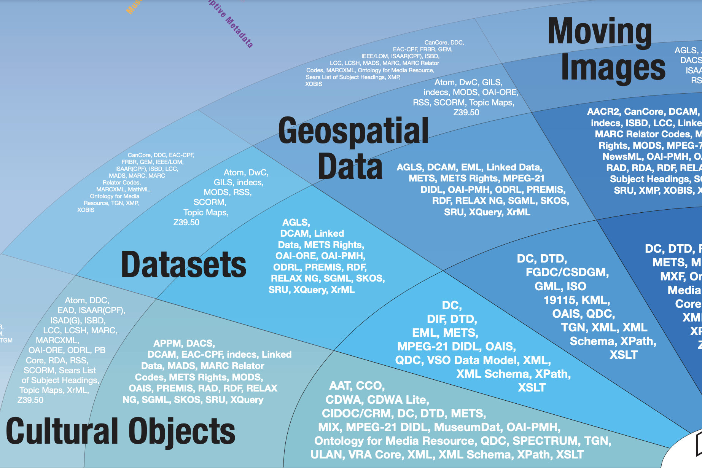

Metadata, geospatial metadata, and READMEs
2026-02-11
1 Introduction to documentation
Many different types (or levels) of documentation:
- Community or team documentation
- Project-level documentation
- Process documentation
- Systems documentation
- Data documentation (aka metadata)
2 What are we talking about metadata?
What is metadata and why does it matter?
What is geospatial metadata?
How can you make metadata?
Portions of these are adapted or inspired by a fall 2022 lecture by Reina Chano Murray (repo).
3 What is metadata?
- What is metadata?
- Why does metadata matter?
- What is a metadata standard?
- What is a schema?
4 What is metadata?
Metadata is data about data. It describes information like who collected it, when, for what purpose, and the level of quality… You can think of metadata as little messengers to the future.
– Sarah Wakamiya (Inventory & Monitoring Program Data Manager), National Park Service from What in the World is Metadata and Why Should I Care?
5 What is metadata?
- Metadata provides context
- Metadata has structure
- Metadata makes it easier to find, use, or manage related data
6 What is metadata?
“the metadata is collected so that it can fulfill a useful purpose, and sorted into known categories. It is this notion of structure that turns raw information into actionable metadata.”
– Jenn Riley, NISO, from Understanding Metadata: What is Metadata, and What is it For?: A Primer, 2017
7 Why does metadata matter?
Metadata makes your data more discoverable and understandable
Good metadata helps others trust, validate, reuse and build upon your data.
8 What are metadata standards?
A metadata standard is a set of rules, or an agreement, that set the minimum amount of information that should be documented about a dataset (and how).
A metadata syntax is a set of rules for the structure and format of the metadata.
Standardizing content and syntax makes it easier for both humans and computers to find and understand your data!
How many standards are there?
Excerpt from Seeing Standards: A Visualization of the Metadata Universe (CC BY-NC-SA 3.0 US) (2010)
So many standards. See Jenn Riley’s Metadata Map.

XKCD Comic: Standards
What is a schema?
Metadata standards usually include schemas.
Schemas provide the overall structure for the metadata - provide a set of elements that should be used to describe a dataset.
What are the commonly required elements of a schema?
- Title
- Creator
- Date
- Subject
- Description
- Rights
9 Geospatial Metadata
Geospatial metadata is just metadata about geospatial datasets, projects, or workflows.
10 What elements are in most geospatial metadata standards?
- Bounding box
- Geographic location (often a identifier or controlled vocabulary, e.g. GeoName)
- Geometry type (a.k.a. spatial representation)
- Projection/coordinate reference system
- Provenance (how the data was made)
Important
Some elements can be generated by a GIS application—but some require manual entry.
11 What else is included in a geospatial metadata standard?
- Geoprocessing tools used to create data
- Maintenance schedule (if data will be updated)
- System/software environment (e.g. software and software version used to create data)
- Geospatial metadata schema
12 Different Levels of Data to Document
- Data file or layer
- Collection of files or layers
- Map or data presentation
- Project
13 Metadata Policies: Maryland iMAP

14 Metadata Policies: Maryland iMAP
- How do you get data published on MD iMAP?
-
MD iMAP Data Submission Policy (Jan. 2015): “organizations can submit data for inclusion in MD iMAP using the guidelines in this document.”
- How should state agencies use ArcGIS Online?
-
Policy and Standards for Esri ArcGIS Online (Mar. 2021): “policy and guidance on standards and the use of ArcGIS Online for Maryland (AGOL) by State agencies.”
- What can people who use MD iMAP expect?
-
MD iMAP Data Management Plan (Jan. 2015): “standards and specifications” to improve “data consistency and availability of information.”
15 Metadata Policies
- How do you ensure the integrity of data for environmental regulation?
-
EPA Metadata Specifications. See also Ecological Metadata Language (EML)
16 Metadata Schemas

- How do you share data across the federal government?
-
Federal agencies are encouraged to use ISO 19115: Geographic information - Metadata (a standard developed from 1999 to 2003 to make the 1998 Content Standard for Digital Geospatial Metadata (CSDGM) work with “other formal and defacto standards that support the documentation of geospatial data and services.”
17 Geospatial Metadata Schemas
- INSPIRE (Infrastructure for Spatial Information in Europe)
- OpenGeoMetadata
OpenGeoMetadata
18 What can you do with geospatial metadata?
- Search and discovery for maps and data
- Gazetteers and controlled vocabularies
- Build tools and references
19 Search and discovery
- GeoBlacklight
- OpenIndexMaps
- Allmaps: Curating, georeferencing and exploring for IIIF maps
OpenIndexMaps
Allmaps
20 Gazetteers
- Who’s On First: a big list of places, each with a stable identifier and some number of descriptive properties about that location.
- Pleiades: a community-built gazetteer and graph of ancient places.
- World Historical Gazetteer
21 What tools help you work with spatial metadata?
- READMEs
- Data dictionaries
- Conventions and controlled vocabularies
- Built-in file and project-level metadata
Varied tools can support the creation of different elements of metadata.
22 Useful how-to resources
23 Useful how-to resources
How to FAIR: “how you can make your research data more FAIR by taking you through six FAIRification practices:”
- Documentation
- File formats
- Metadata
- Access to data
- Persistent identifiers
- Data licences
24 Tips for Documentation
READMEs and data dictionaries are your best friends
Document your data along the way - saves you time at the end!
Use descriptive file names
Use GIS applications to make metadata
If you’re using geospatial desktop software or web GIS, create your metadata in the platform/software you start in (inheritance). You can usually export the metadata as XML.
25 What is a README?
A README file is a text file containing key information about your data which gives the reader a general understanding of the purpose and history of your data set, how it is organized, and how it can be used. You can think of a README file as a manual for your data.
You can use it to capture components of your data that are not adequately captured in the metadata contained with your geoprocessing application.
26 What write a README?
While some of the information contained within your README file may overlap with the content you entered in the metadata within your geoprocessing tool, it is still a good idea to create a separate file that lives outside of your geospatial file.
This is helpful for not only if you share your data with others, but is also beneficial to yourself if you need to revisit your data in the future.
Furthermore, some geospatial formats (e.g. GeoJSON) or other formats you might save your file as (csv) just can’t store metadata like a shapefile or GeoPackage.
Cover all your bases.
27 README Files - What to include?
Use templates and checklists!
High-level and essential information, e.g. purpose of the data set, where the files can be found
Geospatial-specific elements, e.g. coordinate reference system, geometry type
Workflow/software environment, e.g. software version, data manipulations which occurred outside of your geoprocessing tool, data version history
File naming and organization, e.g. purpose of key files and file naming scheme
28 Practice: Using the {labelled} package
Practice using the {labelled} package to label variables with labelled::set_variable_labels() and generate a data dictionary with labelled::generate_dictionary().
29 Open Data Charter (2015)
Created in October 2015, the International Open Data Charter developed six principles on how to publish data that can be freely used, reused, and redistributed by anyone, anytime, anywhere:
- Open by Default
- Timely and Comprehensive
- Accessible and Usable
- Comparable and Interoperable
- For Improved Governance and Citizen Engagement
- For Inclusive Development and Innovation
30 FAIR and CARE
FAIR Guiding Principles (2016):
- Findable,
- Accessible,
- Interoperable,
- and Reusable

CARE Principles for Indigenous Data Governance (2019):
- Collective benefit,
- Authority to control,
- Responsibility,
- and Ethics
31 Practice: Is this data FAIR?
Take a look at the prompt in our running course notes document and try evaluating whether a dataset is FAIR (Findable, Accessible, Interoperable, and Reusable).
32 Extra: Create your ORCID iD
Persistent identifiers are not just for datasets. They can also help to identify individual researchers or developers. The ORCID iD is one commonly used persistent identifier for researchers: register to sign up and get your own ORCID iD.